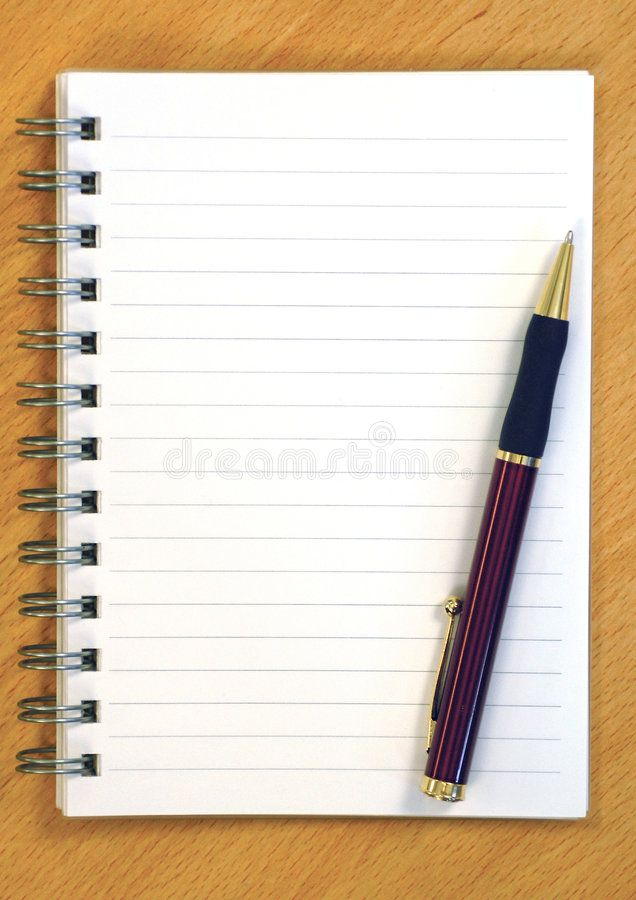

<
How to write a book in 7 phases
The first 7 phases of writing a boook are the most important because planning is the key to a perfect book .

- The first phase brain stroming this can be plannning how long the book is gonig to be or what are the main chacercters names this procces
can take from a week to a month and if it takes longer remeber its fine great things take a long time make and everone has a differnt pace when writing so plan your herat out in this phase no matter how long it takes .
- The second phase is to build up your charcters figure out what they look like how old they are how many main chacreters there are what your charceters personalities are like .
- The thrid phase is to plan what type of sentences your going to use .Pick some words that you like and think would be good for your book .
- The forth phase is to choose or make up the names of places for exaple the charcters aperment or compound name or you could plan what the name of your charcters favorite cafe anything and everthing give it a name .
- The fifth phase is too plan how the characters end the book do they get the job they wanted do they fall in love with someone are they married, do they gradutae uni or high school what ever happens in the end plan it.
- The sixth phase is to start writing a draft of a few chapters and once your happy then you can move on to your first draft of the book.
- The seventh phase is to plan your front cover and find an illustrator
What you will need
- A pen or pencil and a note book or a laptop or tablet which ever you prefer
- Schdeule online or offline
- Last your brain

Things to remeber.
Things to remeber . the main thing you have to remeber is to not make a time limit for yourself makeing time limits makes you stressed and not able to
concentrate if you dont make a time limit then your less stressed and ready to create a master piece . Also you have got to remeber that edits can be made nothing
is perfect the first time edits are key .